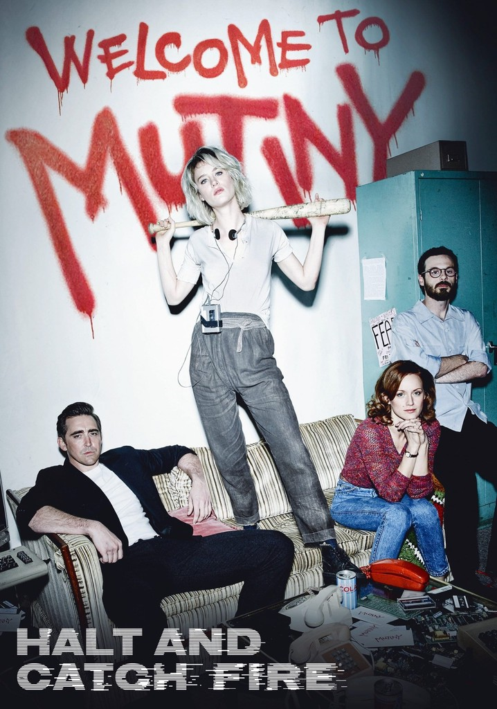
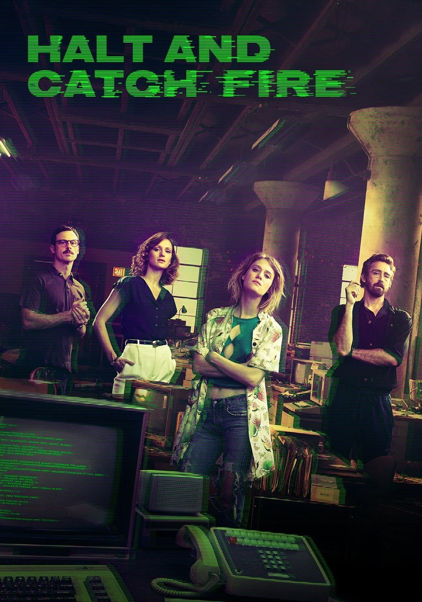
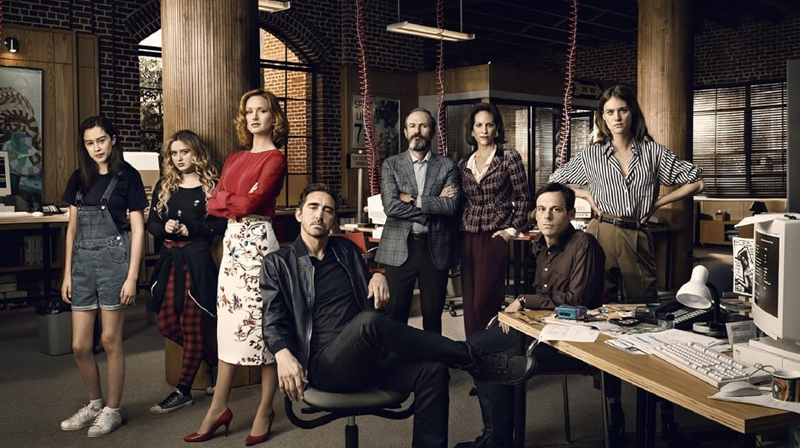

La primera temporada se centra en el intento de Cardiff Electric de crear un clon del IBM PC. Joe MacMillan lidera el proyecto, reclutando a Gordon Clark y Cameron Howe. La temporada explora los desafíos técnicos, las luchas de poder y los sacrificios personales involucrados en la innovación.
Episodio 1: Entrada y salida (I/O)
Episodio 2: Miedo, incertidumbre y duda (FUD)
Episodio 3: Hardware de altas llanuras (High Plains Hardware)
Episodio 4: Cerca del metal (Close to the Metal)
Episodio 5: Aventura (Adventure)
Episodio 6: Derrumbe (Landfall)
Episodio 7: Gigante (Giant)
Episodio 8: Los dos, uno, cuatro (The 214s)
Episodio 9: El festival del fuego (Up Helly Aa)
Episodio 10: 1984
Temporada 2

La segunda temporada sigue a Cameron y Donna mientras lanzan Mutiny, una de las primeras comunidades en línea. La temporada se adentra en el mundo de las startups, los juegos en línea y los desafíos de monetizar una plataforma digital, mientras Joe y Gordon exploran nuevos horizontes.
Episodio 1: S.E.T.I.
Episodio 2: New Coke
Episodio 3: La entrada
Episodio 4: Juega con tus amigos
Episodio 5: Extracción y defensa
Episodio 6: 10Broad36
Episodio 7: Trabajando para la represión
Episodio 8: Limbo
Episodio 9: Kali
Episodio 10: El cielo es un lugar
Temporada 3

La tercera temporada ve a Mutiny mudarse a Silicon Valley, donde se enfrentan a una competencia feroz y a los desafíos de escalar su negocio. La temporada explora temas de adquisición, la ética en la tecnología y las crecientes tensiones dentro del equipo.
Episodio 1: El valle de las delicias
Episodio 2: De una manera o de otra
Episodio 3: Cambio de chip
Episodio 4: Reglas de juego limpio
Episodio 5: Yerba Buena
Episodio 6: Y ella fue
Episodio 7: El umbral
Episodio 8: No estás a salvo
Episodio 9: NIM
Episodio 10: NeXT
Temporada 4

La última temporada salta a los primeros días de la World Wide Web. Los personajes principales, ahora más maduros, buscan su lugar en el nuevo panorama de Internet, explorando ideas como los motores de búsqueda y los portales web. Es una reflexión sobre el legado, la amistad y el impacto duradero de la tecnología en sus vidas.